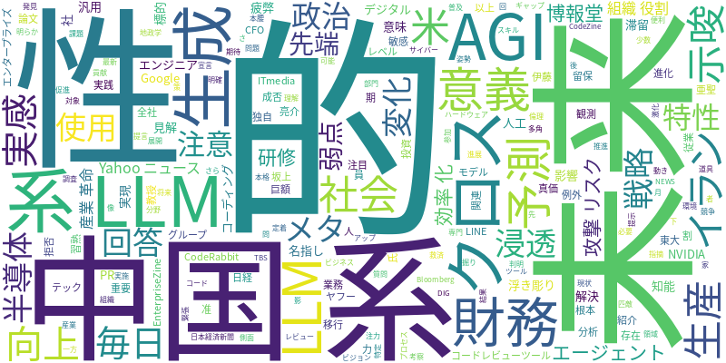

☁️ 今日のトレンドワード

📰 今日のピックアップニュース (10件)
AGI未来予測、その意義は？
汎用人工知能（AGI）が実現した未来の予測に意味があるのか、デジタルクロスが深掘り。技術の進展だけでなく、社会への影響や倫理的な側面も考察の対象となる。専門家の見解を交え、AGIの未来像を多角的に探る。
イラン、米AI企業に攻撃リスク
イランがGoogleやNVIDIAなど米7社を標的として名指し。AI企業がサイバー攻撃のリスクに晒されている現状が浮き彫りになった。地政学的な緊張がAI産業にも影を落とす可能性を示唆する。
AIコードレビューで開発者救済
AIコーディングによるPR滞留問題に、AIコードレビューツール「CodeRabbit」が解決策を提示。エンジニアの疲弊を救い、開発プロセスを効率化するAIの真価に迫る。生産性向上への貢献が期待される。
生成AI、実感ありでも毎日使用は少数
生成AIによる生産性向上を9割が実感する一方、「毎日使う」との回答はわずか6％。ITmediaエンタープライズが報じたこの調査結果は、普及と定着のギャップを示唆。活用促進の課題が浮き彫りに。
メタ、AI戦略で半導体開発へ注力
メタがAI戦略の成否を懸け、独自の半導体開発に本格的に乗り出す。巨額投資を伴うこの動きは、AI分野における競争激化と、ハードウェア開発の重要性を裏付けるものだ。
AI浸透後の財務組織の役割
LINEヤフーのCFO、坂上亮介氏が、AI活用が浸透した未来における財務組織の役割と存在意義を語る。変化するビジネス環境下で、財務部門がどのように進化していくべきか、そのビジョンが示される。
中国系LLM、政治的特性に注意
東大准教授・伊藤亜聖氏が、中国系LLMを含む25モデルを分析。敏感な質問に対し、中国系LLMは約60％が回答拒否または留保。政治的特性を理解し、使用に注意が必要との提言。
先端LLMの「思わぬ弱点」判明
最新のAI注目論文では、先端LLMに例外なく観測される「思わぬ弱点」が明らかに。日経クロステックが紹介するこの発見は、LLMのさらなる進化に向けた重要な示唆を与える。
AIエージェントは産業革命レベル
AIエージェントは単なる業務効率化ツールではなく、「産業革命」に匹敵する社会の根本的な変化と捉えるべきだとの指摘。Yahoo!ニュースで紹介されたこの見解は、AIの将来的な影響力の大きさを物語る。
博報堂ＤＹ、AI研修を全社展開
博報堂ＤＹグループが31,000人以上の従業員にAI関連研修を実施。「実践・習熟期」への移行を宣言し、全社的なAI活用推進の姿勢を明確にした。従業員のスキルアップと組織力の強化を目指す。
今日のAI・テック業界は、AGIの未来予測からサイバー攻撃リスク、そしてLLMの政治的特性まで、多岐にわたる話題で賑わいました。イランによる米AI企業への攻撃リスク名指しは、AI技術が地政学的な緊張と結びつく現実を示唆しています。一方、AIコードレビューツールや生成AIによる生産性向上の実感といったポジティブなニュースも多く、開発現場やビジネスシーンでのAI活用が進んでいる様子が伺えます。メタの半導体開発への注力や、LINEヤフーの財務組織におけるAIの役割論は、AIが企業の戦略や組織構造に与える影響の大きさを物語っています。さらに、AIエージェントを「産業革命」レベルの変化と捉える見解や、博報堂ＤＹグループによる全社的なAI研修の実施は、AIが社会全体に浸透し、変革をもたらす可能性を示唆しています。先端LLMの弱点発見や中国系LLMの政治的特性に関する分析は、AI技術の進化と同時に、その利用における注意点や倫理的な側面も重要であることを再認識させられます。